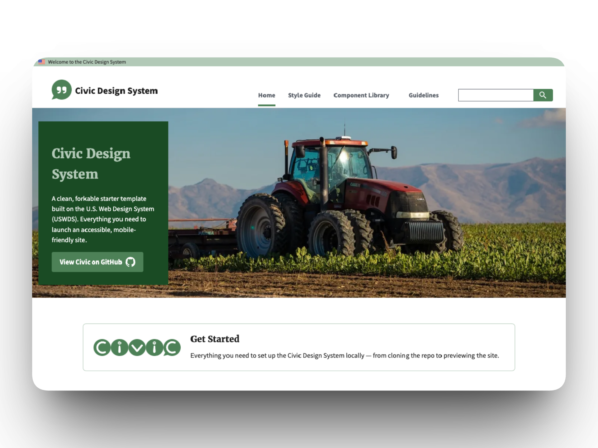
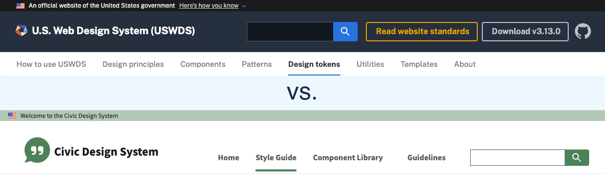
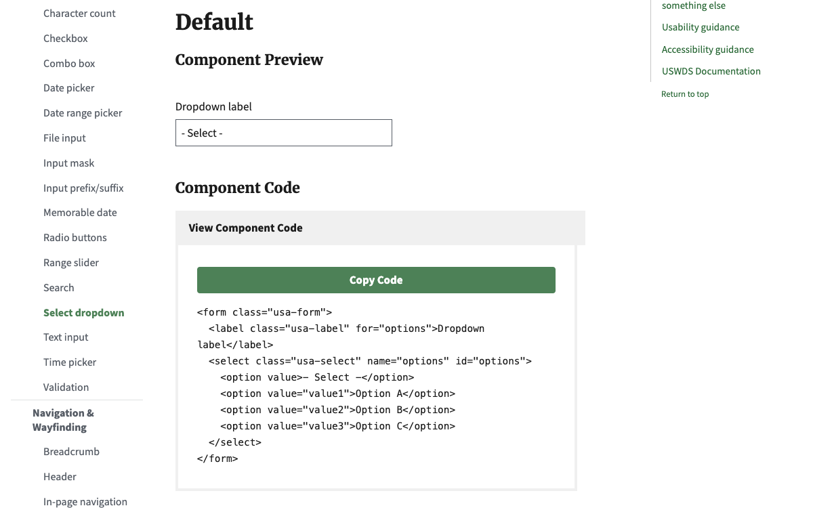
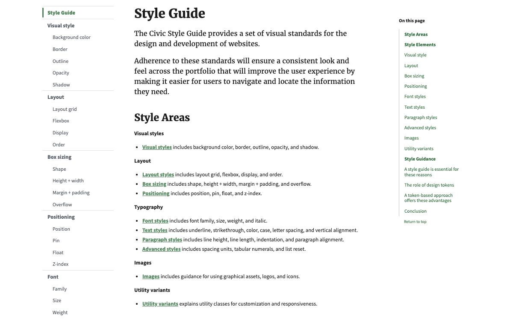

Civic Design System
USDA FPAC — Design System Modernization
View the Live Project →
The Problem
USDA's Farm Production and Conservation mission area was running on USWDS 1.x with fragmented design practices across multiple agencies. Development teams had no shared design language, no centralized documentation, and no consistent accessibility standards. The existing federal design system documentation was structured around system architecture rather than the needs of the developers and designers building with it.
The Approach
I led the modernization of the FPAC Design System, upgrading from USWDS 1.x to 3.x and coordinating with engineers to establish the build and distribution pipeline.
The biggest design decision was restructuring the documentation's information architecture. The USWDS site organizes its guidance across 8 top-level sections that reflect the system's internal architecture: Components, Patterns, Templates, Design Tokens, Utilities, and so on. That structure makes sense if you manage the system, but developers trying to implement a component and designers trying to understand what's available shouldn't need to think in those terms. I consolidated the site into 4 sections based on user workflows: a Style Guide (tokens + utilities), a Component Library (components + patterns + templates), Guidelines (accessibility + process), and a Home page for orientation.

I built the full 107-page documentation site in HTML, CSS/SCSS, and JavaScript. The Style Guide covers typography, color, layout, and visual style utilities with interactive examples. The Component Library documents approximately 60 components with implementation-focused content — I stripped out the system-level configuration details that were creating noise for the people doing the actual building. I also created comparison tables mapping the legacy FSA Design System (1.x) to the new FPAC Design System (3.x), so teams could see exactly what was changing and where their existing implementations needed to update.

Beyond the documentation, I updated the agency's Section 508 accessibility guidance to WCAG 2.2 AA, publishing it in both the Design System and on Confluence. I re-established the cross-agency FPAC UX Sync group, engaging design and development teams across NRCS, FSA, Farmers.gov, and RMA to drive adoption. I also built the case for enterprise Figma adoption across FPAC, researching costs and documenting use cases across mission areas.

Reflection
A design system's documentation is the product for most of its users. You can build the most elegant token system in the world, but if a developer can't find what they need in under 30 seconds, it doesn't matter. I also learned that adoption can't be driven from one direction alone — it requires working bottom-up through developers, top-down through leadership, and middle-out through technical architects simultaneously.
After the contract ended, I forked the design system as the Civic Design System — an open-source resource for federal agencies and civic organizations to use as a starting point for their own USWDS-based design systems.